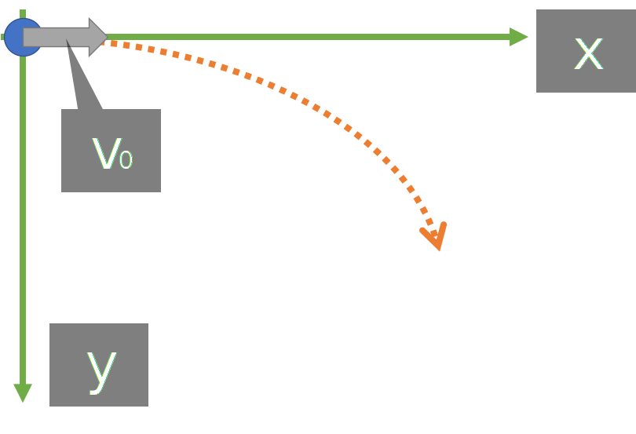
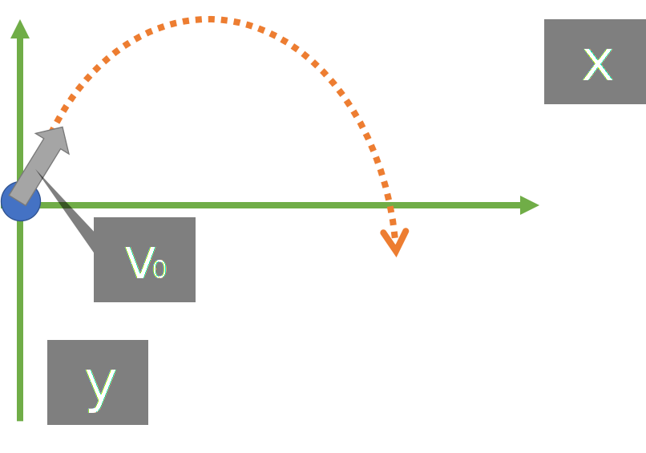
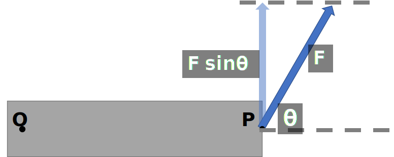

「厳密な表現」は心がけていない。
用語の解説も特に行っていないので自身で調べていただければ幸い。
必要な時を除いて正の向きの定義は省略する。
(制作者がミスっているものを除けば、省略されているものは、どちらに正の向きを定義しても式が成立する)
"変数リスト"はタップして展開できる。 式に使う文字は"変数リスト"に準ずる。 単位は基本[]で囲ってある。
水平投射/斜方投射
水平投射
原点Oから初速度 \( v_0 \)[m/s] で投射した時を考える。
水平方向(x軸)
- \(v_x = \) \(v_0\)
- \(x =\) \( v_0 t\)
変数リスト
- \(v_x\) [m/s]: 速度の\(x\)成分
- \(v_y\) [m/s]: 速度の\(y\)成分
- \(x\) [m]: 位置の\(x\)成分
- \(y\) [m]: 位置の\(y\)成分
- \(v_0\) [m/s]: 初速度
- \(g\) [m/s2]: 重力加速度
- \(t\) [s]: 時刻 (物体が運動を始めたとき\(t=0\) )
水平成分の式は、速度\(v_0\)[m/s]の等速直線運動と同じ
鉛直方向(y軸)
鉛直下向きを正とする
- \(v_y = \) \(gt\)
- \(y =\) \(\frac{1}{2}gt^2 \)
変数リスト
- \(v_x\) [m/s]: 速度の\(x\)成分
- \(v_y\) [m/s]: 速度の\(y\)成分
- \(x\) [m]: 位置の\(x\)成分
- \(y\) [m]: 位置の\(y\)成分
- \(v_0\) [m/s]: 初速度
- \(g\) [m/s2]: 重力加速度
- \(t\) [s]: 時刻 (物体が運動を始めたとき\(t=0\) )
鉛直成分の式は自由落下運動と同じ
斜方投射
x軸からθ回転させた向きに、v0[m/s]で射法投射したときを考える。
\(t=0\)のとき、\(v_x=\)\(v_0 \cos \theta\), \(v_y =\) \(v_0 \sin \theta\)
水平方向
- \(v_x =\) \(v_0 \cos \theta \)
- \(x=\) \(v_0t \cos \theta \)
変数リスト
- \(v_x\) [m/s]: 速度の\(x\)成分
- \(v_t\) [m/s]: 速度の\(y\)成分
- \(x\) [m]: 位置の\(x\)成分
- \(y\) [m]: 位置の\(y\)成分
- \(v_0\) [m/s]: 初速度
- \(g\) [m/s2]: 重力加速度
- \(\theta\): \(x\)軸と\(\vec{v_0}\)のなす角
- \(t\) [s]: 時刻 (物体が運動を始めたとき\(t=0\))
水平成分の式は、速度v0 cos θの等速直線運動の式に同じ。
鉛直方向
鉛直上向きを正とする
- \(v_y =\) \(-gt + v_0 \sin \theta\)
- \(y=\) \(-\frac{1}{2}gt^2 + v_0 t \sin \theta \)
変数リスト
- \(v_x\) [m/s]: 速度の\(x\)成分
- \(v_t\) [m/s]: 速度の\(y\)成分
- \(x\) [m]: 位置の\(x\)成分
- \(y\) [m]: 位置の\(y\)成分
- \(v_0\) [m/s]: 初速度
- \(g\) [m/s2]: 重力加速度
- \(\theta\): \(x\)軸と\(\vec{v_0}\)のなす角
- \(t\) [s]: 時刻 (物体が運動を始めたとき\(t=0\))
鉛直成分の式は初速度\(v_0 \sin \theta \), 加速度\(-g\)の等加速度直線運動の式と同じ
力のモーメント
回転中心から \(r\) [m]はなれた点Pに \( F \) [N]の力を加えたときの, 点Oの周りの力のモーメントを考える。
力のモーメントとは
力のモーメントは、図でいう点Oを中心にして、剛体を回転させるためのはたらきのことを指す。
単位は[N·m]である。
大きさの式
変数リスト
- \( N \) [N·m]: 力のモーメントの大きさ
- \( r \) [m]: 回転中心Oから作用点Pまでの距離
符号
回転の向きが時計回りの時、符号は負。
反時計回りの時、符号は正。
おまけの話
おまけの話
力のモーメントは回転中心Oからの点Pの位置ベクトル \( \vec{r} \) と, 点Pに加えた力のベクトル \( \vec{F} \) のベクトル積(外積)で示される。
$$ \vec{N} = \vec{r} \times \vec{F} $$
運動量と力積
運動量
"運動の激しさ"のイメージ
変数リスト
- \( \vec{p} \) [kg·m/s]: 運動量
- \( \vec{v} \) [m/s]: 物体の速度
- \( m \) [kg]: 物体の質量
力積
変数リスト
- \( \vec{I} \) [N·s]: 力積
- \( \Delta t \) [s]: 力が働いた時間
- \( \vec{F} \) [N]: 力
運動量と力積
物体の運動量の変化は力積がもたらす。
運動量保存の法則
物体の系の外から力がはたらかないときに、衝突の前後で系の運動量の総和は保存される。
反発係数
物体Aが \( v_1 \) [m/s]で、物体Bが \( v_2 \) [m/s]で運動し、ぶつかったとき、
\( e=1 \) の時は力学的エネルギーが保存される。
変数リスト
- \( e \) : 反発係数
- \( v_1 \) [m/s]: 衝突前の物体Aの速度
- \( v_2 \) [m/s]: 衝突前の物体Aの速度
- \( {v_1}^\prime \) [m/s]: 衝突後の物体Aの速度
- \( {v_2}^\prime \) [m/s]: 衝突後の物体Aの速度
等速円運動
原点Oを中心とした半径 \( R \) [m]の円周上を, 物体が運動している様子を考える。
用語の確認
-
- \( \omega \) [rad/s]: 角速度
- 単位時間あたりに、円周上を何rad分回転したか。
角速度の式
\( \theta \) , \( t \) , \( \omega \) の関係式
変数リスト
- \( \theta \) [rad]: 回転角(位置向きの情報)
- \( \omega \) [rad/s]: 角速度
- \( t \) [s]: 時刻
位置, 速度, 加速度, 向心力
原点Oを中心とした半径 \( R \) [m]の円周上を, 物体が運動している様子を考える。
位置 \( \vec{r} \)
ここでは, \( \theta = 0, t=0 \) で運動を開始してから, \( t \) [s]後の物体の位置を考える。
速度 \( \vec{v} \)
定義より, \( \vec{v} \) は, \( \vec{r} \) を \( t \) で微分して得られる。
導出
$$v_x=\frac{\mathrm{d}r_x}{\mathrm{d}t}=-R\omega \sin \omega t$$
$$v_y=\frac{\mathrm{d}r_y}{\mathrm{d}t}=R\omega \cos \omega t$$
加速度 \( \vec{a} \)
定義より, \( \vec{a} \) は, \( \vec{v} \) を \( t \) で微分して得られる。
\( \vec{r} \) と, \( \vec{a} \) の関係として, \( \vec{a}= -\omega^2 \vec{r} \) が成り立つ。
導出
$$a_x=\frac{\mathrm{d}v_x}{\mathrm{d}t}=-R\omega^2 \cos \omega t$$
$$a_y=\frac{\mathrm{d}v_y}{\mathrm{d}t}=-R\omega^2 \sin \omega t$$
向心力
円運動において中心に向かう力。 加速度を生ませている力。
ベクトルの向き
位置( \( \vec{r} \) )と速度( \( \vec{v} \) ), 速度( \( \vec{v} \) )と加速度( \( \vec{a} \) )
位置( \( \vec{r} \) )と加速度( \( \vec{a} \) )
周期
何秒間で物体が1周するか。
変数リスト
- \( r \) [m]: 円運動の半径
- \( \omega \) [rad/s]: 角速度
- \( v \) [m/s]: 速さ (速度の大きさ \( |\vec{v}| \) のこと)
- \( T \) [s]: 周期 (物体が1週まわるまでの時間)
単振動
等速円運動をしている物体のその運動面上にある直線への正射影の運動(By アクセス)
変位と速度と加速度
振動中心を \( x=0 \) とする。
変数リスト
- \( x \) [m]: (振動中心からの)変位
- \( v \) [m/s]: 速度
- \( a \) [m/s2]: 加速度
- \( t \) [s]: 時刻
- \( A \) [m]: 振幅
- \( \omega \) [rad/s]: 角振動数
周期と振動数
変数リスト
- \( A \) [m]: 振幅
- \( \omega \) [rad/s]: 角振動数
- \( T \) [s]: 周期
- \( f \) [Hz]: 振動数
復元力
単振動中の物体にはたらく力。常に振動中心を向いている。
変数リスト
- \( F \) [N]: 復元力の大きさ
- \( m \) [kg]: 物体の質量
- \( x \) [m]: 変位
- \( \omega \) [rad/s]: 角振動数
万有引力
ケプラーの法則
- 第1法則
- 惑星は太陽を1つの焦点とする楕円軌道を描く
- 第2法則
- 惑星と太陽を結ぶ線分が一定時間に描く面積は, それぞれの惑星で一定である。
- ⇒ 太陽から遠いときは惑星が"遅い"
- 第3法則
- 惑星の公転周期 \( T \) の2乗は, 楕円軌道の半長軸 \( a \) の3乗に比例する。
- \( T^2=ka^3 \) (\( k \): 定数)
万有引力
質量 \( M \) , \( m \) の2つの物体は互いに引き合う。
⇒ 万有引力
変数リスト
- \( F \) [N]: 万有引力の大きさ
- \( m \) , \( M \) [kg]: それぞれの物体の質量
- \( r \) [m]: 2つの物体の距離
-
\( G \) [N·m2/kg2]: 万有引力定数
物体によらない定数で, \( G= \) \( 6.67\times 10^{-11} \)
導出
-
\( m \) [kg] の惑星が, 太陽を中心に, 半径 \( r \) [m], 角速度 \( \omega \) で等速円運動をしているとき, 向心力の大きさ \( F \) は
\( F=mr\omega^2 \) -
角速度 \( \omega \) は 周期 \( T \) を用いて, \( \omega=\frac{2\pi}{T} \) としてされるので, 向心力の大きさは,
$$ F=mr\left(\frac{2\pi}{T}\right)^2 $$ -
ケプラーの第3法則 \( T^2=kr^3 \) (\( k \) は定数)より,
$$ F=\frac{4\pi^2mr}{kr^3}=\frac{4\pi^2m}{kr^2} $$ -
したがって, 向心力の大きさ \( F \) は, 惑星の質量 \( m \) に比例する。
\( F \propto m \) -
作用反作用の法則により, 太陽は同じ大きさの力を惑星から受けるので,
向心力の大きさ \( F \) は, 太陽の質量 \( M\) に比例する\( F \propto M \) -
4.と5.より, \( \displaystyle \frac{4\pi^2}{k}=GM \) (\( G \)は比例定数)として, 3.の式を変形すると,
$$ F=G\frac{Mm}{r^2} $$
万有引力の位置エネルギー
無限遠を0(基準)として,
$$U=-G\frac{Mm}{r}$$
変数リスト
- \( U \) [J]: 万有引力の位置エネルギー
- \( m \) , \( M \) [kg]: それぞれの物体の質量
- \( r \) [m]: 2つの物体の距離
- \( G \) [N·m2/kg2]: 万有引力定数
導出
方法1
-
今回求める位置エネルギーは, 「保存力である万有引力が求める位置 \( r \)[m] から基準までする仕事」と等価
-
仕事は, 仕事する力と, 移動距離の積分で求められる
$$U=\int_r^\infty G\frac{Mm}{r^2}\mathrm{d}r \cos 180\degree$$\( r \) から基準までの向きは, 万有引力がはたらく向きと逆向きのため, \( \cos 180\degree \) を乗じている
厳密な表現ではないことをお許しください -
2. を解いて, 求められる
方法2
-
今回求める位置エネルギーは, 「基準から求める位置 \( r \)[m] まで, 外力がゆっくり一定の速さでする仕事」と等価
-
ゆっくり一定の速さで基準から求める位置まで物体を移動させるには, 常に位置 \( r \)[m]において万有引力と逆向きに$$G\frac{Mm}{r^2}$$[N]の力を与えることになる
-
仕事は, 与えている力と, 移動距離の積分で求められる
$$U=\int_\infty^r G\frac{Mm}{r^2}\mathrm{d}r$$厳密な表現ではないことをお許しください -
3. を解いて, 求められる
第1宇宙速度
地球の地表近くを円運動するための速さ
$$v=\sqrt{\frac{GM}{R}}$$
変数リスト
- \( v \) [m/s]: 第1宇宙速度
- \( M \) [kg]: 地球の質量
- \( R \) [m]: 地球の半径
- \( G \) [N·m2/kg2]: 万有引力定数
導出
-
質量 \( m \)[kg] の物体は, 地球から受ける万有引力を向心力として等速円運動する
-
等速円運動の運動方程式は
$$m\frac{v^2}{R} = G\frac{Mm}{R^2}$$ -
これを解いて, \( v\gt 0 \) で導かれる